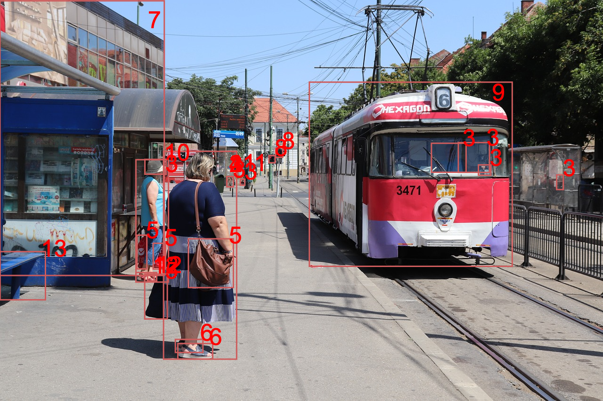

Computer vision
Selectează o imagine
Peisaj urban
| Etichetă | Grad de încredere |
| Adult1 | 100% |
| Femeie 2 | 100% |
| Persoană 3 | 100% |
| Femeie 4 | 99% |
| Geantă de mână5 | 100% |
| Sanda 6 | 94% |
| Clădire 7 | 89% |
| Etichetă | Grad de încredere |
| Semafor8 | 89% |
| Autobuz9 | 88% |
| Pălărie10 | 87% |
| Mașina11 | 69% |
| Telecabină | 66% |
| Pantof 12 | 63% |
| Bancă 13 | 60% |
Șantier

| Etichetă | Grad de încredere |
| Persoană 1 | 100% |
| Cască de protecție 2 | 100% |
| Construcție 3 | 76% |
| Adult1 | 99% |
| Bărbat 5 | 99% |
| Etichetă | Grad de încredere |
| Camion 6 | 88% |
| Încălțăminte 7 | 88% |
| Roată 8 | 83% |
| Ochelari de protecție | 94% |
| Semn de avertizare | 31% |
Fructe și legume

| Etichetă | Grad de încredere |
| Banana 1 | 100% |
| Fruct | 100% |
| Portocaliu 2 | 85% |
| Pară 3 | 84% |
| Pui 4 | 78% |
| Lămâie | 62% |
| Măr 5 | 50% |
| Etichetă | Grad de încredere |
| Coş | 55% |
| Grapefruit | 53% |
| Piper | 53% |
| Lămâie verde | 52% |
| Dovlecel | 52% |
| Ghimbir | 51% |
| Avocado | 51% |